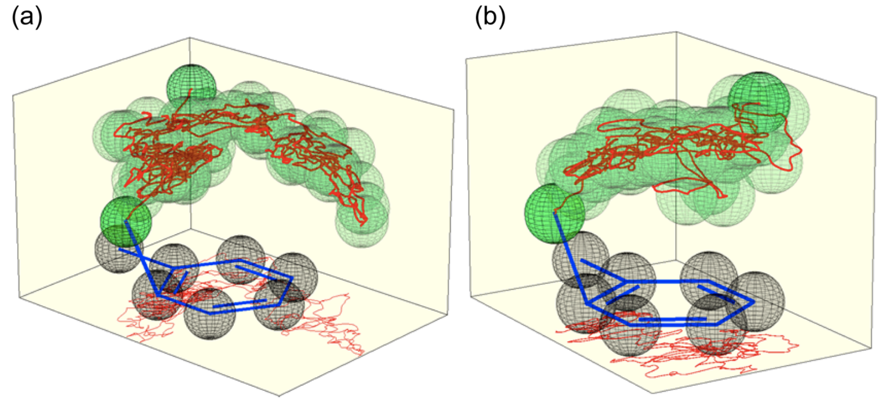
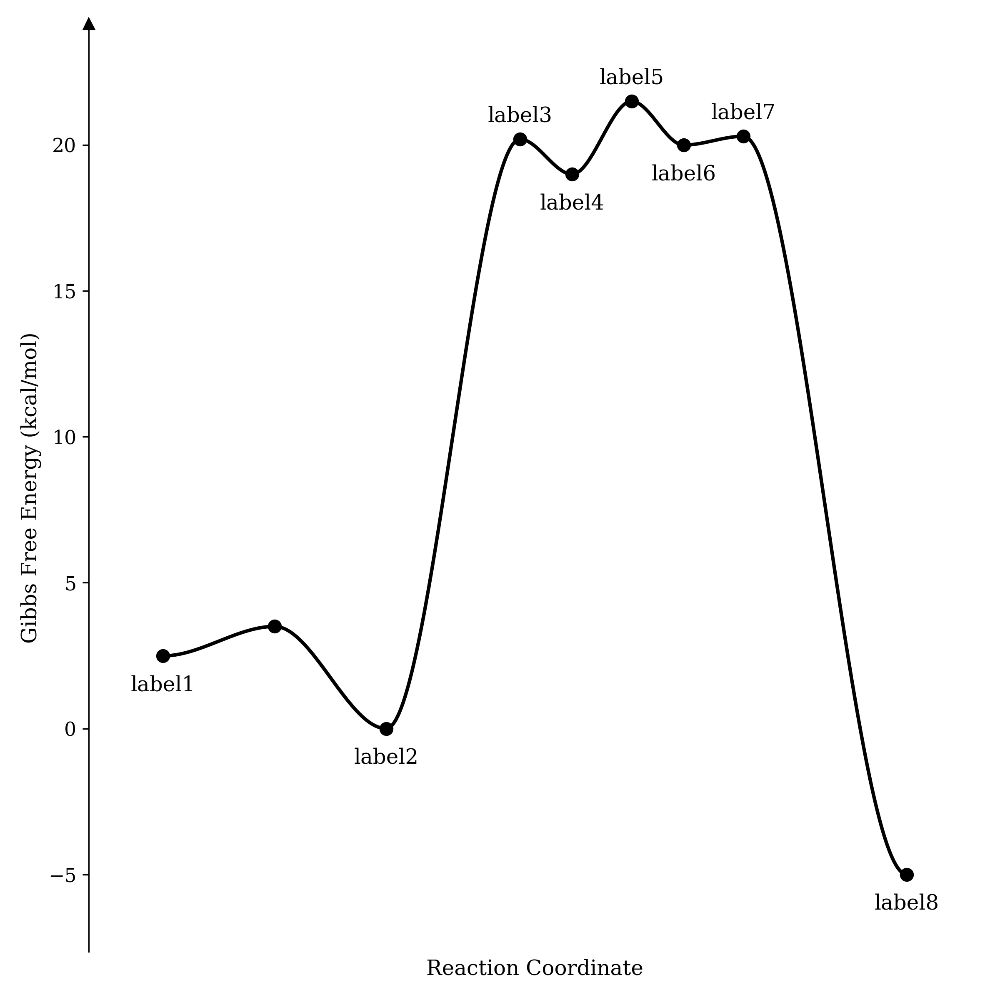

This is the second in what will hopefully become a series of blog posts (previously) focusing on the fascinating work of Dan Singleton (professor at Texas A&M). My goal is to provide concise and accessible summaries of his work and highlight conclusions relevant to the mechanistic or computational chemist.
Today I want to discuss one of my favorite papers, a detailed study of the nitration of toluene by Singleton lab at Texas A&M.
Regiochemistry of the nitration of toluene with nitronium tetrafluoroborate in dichloromethane.
This reaction, a textbook example of electrophilic aromatic substitution, has long puzzled organic chemists. The central paradox is that intermolecular selectivity is typically quite poor between different arenes, but positional selectivity is high—implying that NO2+ is unable to recognize more electron-rich arenes but somehow still able to recognize more electron-rich sites within a given arene.
George Olah devoted considerable effort to studying this paradox:
Kuhn and I have subsequently developed a new efficient nitration method by using stable nitronium salts (like tetrafluoroborate) as nitrating agents. Nitronium salt nitrations are also too fast to measure their absolute rates, but the use of the competition method showed in our work low substrate selectivity, e.g., kt/kb of 1-2. [In other words, competition experiments show at most a 2-fold preference for toluene.]On the basis of the Brown selectivity rules, if these fast reactions followed σ-complex routes they would also have a predictably low positional selectivity (with high meta isomer content). However, the observed low substrate selectivities were all accompanied by high discrimination between available positions (typical isomer distributions of nitrotoluenes were (%) ortho:meta:para = 66:3:31). Consequently, a meta position would seem to be sevenfold deactivated compared to a benzene position, giving a partial rate factor of mf = 0.14. These observations are inconsistent with any mechanism in which the individual nuclear positions compete for the reagent (in the σ-complex step).
In explanation, we suggested the formation of a π complex in the first step of the reactions followed by conversion into σ complexes (which are of course separate for the individual ortho, para, and meta positions), allowing discrimination in orientation of products.
(ref, emphasis added)
His conclusion, summarized in the last sentence of the above quote, was that two different sets of complexes were involved: π complexes which controlled arene–arene selectivity, and σ complexes which controlled positional selectivity. Thus, the paradox could be resolved simply by invoking different ∆∆G‡ values for the transition states leading to π- and σ-complex formation. The somewhat epicyclic nature of this proposal led to pushback from the community, and (as Singleton summarizes) no cogent explanation for this reactivity had yet been advanced at the time of writing.
A summary of Olah’s proposed resolution, featuring π- and σ-complexes.
The authors of this paper initiated their studies of this reaction by performing an extensive series of “traditional” DFT calculations in implicit solvent. M06-2X/6-311G(d) was chosen by benchmarking against coupled-cluster calculations, and the regiochemistry was examined with a variety of computational methods.
In the absence of BF4-, naïve calculations predict entirely the wrong result: the para product is predicted to be more favorable than the ortho product, and no meta product is predicted to form at all. However, closer examination of the transition states reveals post-transition-state bifurcation in each case: for instance, the “para” transition state actually leads to para/meta in a 89:11 ratio. When all possible bifurcations for all transition states are taken into account in a Boltzmann-weighted way, the results remain wrong: para is still incorrectly favored over ortho, and meta is now predicted to form in a much higher proportion than observed.
Illustration of transition states and post-TS bifurcations for traditional DFT calculations.
The authors examine various potential resolutions of this problem, including inclusion of BF4-, use of explicit solvent within an ONIOM scheme, and other nitration systems which might lead to more dissociated counterions. These methods lead to different, but equally wrong, conclusions.
They then perform free energy calculations to determine the energetics of nitronium approach to toluene (in dichloromethane). Surprisingly, no barrier exists to NO2+ attack: once nitronium comes within 4.5 Å of the arene, it is “destined to form some isomer” of product (in the authors’ words). Singleton and Nieves-Quinones dryly note:
…The apparent absence of transition states (more on this later) after formation of the encounter complex has never previously been suggested. This absence is in fact counter to basic ideas in all previous explanations of the selectivity.
This observation explains one horn of the dilemma—why selectivity between different arenes is low—but leaves unanswered why positional selectivity is so high. To examine this question, the authors then directly run reactions in silico by using unconstrained ab initio molecular dynamics (AIMD) and observe the product ratio. The product ratio (45:2:53 o/m/p) they observe matches the experimental values (41:2:57 o/m/p) almost perfectly!
With this support for the validity of the computational model in hand, the authors then examine the productive trajectories in great detail. Surprisingly, they find that although no barrier exists to nitronium attack, the reaction is relatively slow to proceed, taking on average of 3.1 ps to form the product. Trajectories lacking either explicit solvent or tetrafluoroborate lack both this recalcitrance and the observed selectivity: instead, nitronium opportunistically reacts with the first carbon it approaches. This suggests that selectivity is only possible when the nitronium–toluene complex is sufficiently persistent.

Nitronium roams within the π complex, sampling different carbons before ultimately forming product.
The authors attribute the long life of the NO2+—toluene complex to the fact that the explicit solvent cage must reorganize to stabilize formation of the Wheland intermediate. This requires both reorientation of the dichloromethane molecules and repositioning of the tetrafluoroborate anion, which both occur on the timescale of the trajectories (ref). Accordingly, the reaction is put on hold while cage reorganization occurs, giving NO2+ time to preferentially attack the ortho and para carbons. (I would be tempted to call the π complex a dynamic/entropic intermediate, in the language of either Singleton or Houk.)
This computational picture thus accurately reproduces the experimental observations and explains the initial paradox we posed: selectivity does not arise through competing transition state energies, but through partitioning of a product-committed π complex which is prevented from reacting further by non-instantaneous solvent relaxation. Since similar π complexes can be formed under almost any nitration conditions, this proposal explains the often similar selectivities observed with other reagents or solvents.
More philosophically, this proposal explains experimental results without invoking any transition states whatsoever. In their introduction, the authors quote Gould as stating:
If the configuration and energy of each of the intermediates and transition states through which a reacting system passes are known, it is not too much to say that the mechanism of the reaction is understood.
While this may be true to a first approximation in most cases, Singleton and co-workers have demonstrated here that this is not true in every case. This is an important conceptual point. As our ability to study low-barrier processes and reactive intermediates grows, I expect that we will more clearly appreciate the limitations of transition-state theory, and have to develop new techniques to interpret experimental observations.
But perhaps the reason I find this paper most exciting is simply the beautiful match between theory and experiment for such a complex and seemingly intractable system. This work not only predicts the observed reaction outcomes under realistic conditions, but also allows (through AIMD) the complete analysis of the entire reaction landscape in exquisite detail, from approach to post-bond-forming steps. In other words, this is a mechanistic chemist’s dream: a perfect movie of the entire reaction’s progress, from beginning to end. Go and do likewise!
Thanks to Daniel Broere and Joe Gair for noticing that "electrophilic aromatic substitution" was erroneously written as "nucleophilic aromatic substitution." This embarassing oversight has been corrected.
Over the past few weeks, I’ve been transfixed, and saddened, by Eric Gilliam’s three-part series about the history of MIT (my alma mater). I’ll post a few quotations and responses below, but if you’re interested you should just go read the original essays
(1,
2,
3).
Why MIT Was Created
Professors who are not steeped in hands-on industrial practice could not produce the kinds of workers that were immediately useful to industry. These schools were outputting the kind of men that [Thomas] Edison, and many others mentioned above, did not believe were meeting the needs of industry. And the technical know-how taught in trade schools was great, but an ideal institute of technology should also impart some higher engineering and scientific knowledge to students to enable them to be more innovative, intelligent problem-solvers.
So, MIT was founded to solve this problem. This school was not designed to be a place for purely lecturing and rote learning. A smattering of intelligent men from industry and university men with an applied bent to them made up the original faculty. Content was lectured as needed, but what differentiated MIT was its innovative use of the laboratory method. Instructors taught “through actual handling of the apparatus and by working on problems, shoulder to shoulder with the boys.” And the schedule, from 9-5 (with a lunch break) 5 days a week and additional class on Saturday was meant to simulate a normal work schedule and, thus, ease the eventual transition to life in the working world.
(part 1)
This quote highlights how MIT was intended to be a counter-cultural university, founded on a distinctly different model than other institutions (like Harvard).
MIT was not meant to be a center of learning and theoretical research, but a school focusing on training the next generation of industrial leaders.
How MIT Supported Itself
But [MIT President] Maclaurin had an idea: self-support. MIT would capitalize on its own assets and earn money by formally offering its services to industry on a larger scale. High numbers of industrial partners had been eager to engage in ad-hoc courses of research with MIT’s applied professors, often paid for by the company, anyway. Why not turn this into a much larger, more formal program that was facilitated by the Institute? The idea would grow into what was known as the Technology Plan.
(part 2)
MIT operated on a different funding model than other universities, relying on support from industry.
This is, in essence, what I proposed several weeks ago in my reflection on the similarities between graduate school and consulting.
This was seen as important and honorable by its leaders at the time:
“There could be no more legitimate way for a great scientific school to seek support than by being paid for the service it can render in supplying special knowledge where it is needed... Manufacturers may come to us with problems of every kind, be they scientific, simple, technical or foolish. We shall handle each seriously, giving the best the institute has at its disposal” - William Walker, head of the Division for Industrial Cooperation and Research
(part 2)
Why MIT Changed Paths
The answer to this question is the subject of Gilliam's
third post.
It's a bit too complex to fully summarize here, but there were a few key factors:
The massive increase in post-WWII funding for science allowed MIT to shift away from applied research and towards basic research.
The growing importance of industrial research labs at inter alia Bell Labs, GE, and DuPont meant that the need for academic applied research was decreasing, and also that academically trained researchers were valuable assets to industry. (This was the case only in the post-war period, however, and by 1980 the era of large industrial research labs had mostly concluded.)
A growing distaste for pursing "boundary work" that could also be done in industry, as opposed to pursuing a uniquely academic niche.
Crucially, the first two factors are less true today than they were when MIT made this decision, implying that the niche filled by "Old MIT" could be occupied again today.
Why A School Like Old MIT Should Still Exist
It seems clear, given MIT’s transition to a more university style of education, that we are left with a hole. We do not have an elite hybrid technical school/applied research institute like this that can draw top talent away from places like Harvard and Stanford to its more hands-on style of education. But, as a country where the manufacturing sector is shrinking (and median wages aren’t doing so well either), we may need a new MIT now more than ever.
There are plenty of individuals at top schools who COULD be swayed to attend a place like this. Speaking for Stanford, where I went to undergrad, there was a large population of people who majored in mechanical engineering and were disenchanted because they did almost exclusively problem set work and very little building of anything real. And I knew even more people majoring in other subjects who abandoned mechanical engineering and majors like it for this reason! “We’re training you to be mechanical engineering managers, not traditional mechanical engineers,” was a common line used in the department. And, while that is a fine goal for a program, it is not what many of the students seem to want. What if I just want to be a top-flight regular engineer who can build awesome stuff?
(part 1)
There can and should be individuals who spend almost all of their time on pure research. But it is probably bad for future progress to allow too many of these individuals to work in an environment in which few of their peers are spending a substantial amount of time working on industrial applications and problems. No matter what, some basic research will always find a way of trickling its way down into practical industrial importance. But allowing pure researchers to be siloed from the acquaintance of those who work on industrial applications — and not just the need to work on those problems themselves — feels like it is setting the system up for inefficiency. When we look back on the era of explosive productivity in areas of basic research like physics and math in the early 1900s, even the purest of pure researchers at the time tended to have regular interactions either with industry or with researchers who did industry-related research — due to industry contracts themselves, close friends who did industry work regularly, or conscription to work on military.
(part 2)
Gilliam's conclusions seem broadly correct to me. While MIT is still a great school, it's no longer pursuing a distinct model for education. The main factors distinguishing MIT from peer institutions are cultural, and even those are being activelysuppressed by the current administration.
In total it took less than a century for the entrepreneurial mindset of MIT, a "startup university", to be replaced by the exact institutional conservatism it was founded to oppose. "You either die a hero or live long enough to see yourself become the villain."
More broadly, there's a broad sense today that innovation, especially in the physical world, is slowing (Peter Thiel may be the most notable proponent of this claim).
A century ago, Americans could build whole networks of subways with comparatively primitive technology; now, something as simple as building a single subway station has become a Herculean task.
I don't mean to draw too direct of a causal connection between the end of Old MIT and the decline in real-world innovation, but perhaps a new school focused on unglamorous, nuts-and-bolts innovation rather than holistic education is exactly what the US needs now.
Organic chemists often think in terms of potential energy surfaces, especially when plotting the results of a computational study.
Unfortunately it is non-trivial to generate high-quality potential energy surfaces. It's not too difficult to sketch something crude in ChemDraw or Powerpoint, but getting the actual
barrier heights correct and proportional has always seemed rather tedious to me.
I've admired the smooth potential energy surfaces from the Baik group for years, and so several months ago I decided to try and write my own
program to generate these diagrams. I initially envisioned this as a python package (with the dubiously clever name of pypes), but it turned out to be simpler than expected, such that I
haven't actually ever turned it into a library. It's easier to just copy and paste the code into various Jupyter notebooks as needed.
Here's the code:
# get packages
import numpy as np
import scipy.interpolate as interp
import matplotlib.pyplot as plt
# make matplotlib look good
plt.rc('font', size=11, family="serif")
plt.rc('axes', titlesize=12, labelsize=12)
plt.rc(['xtick', 'ytick'], labelsize=11)
plt.rc('legend', fontsize=12)
plt.rc('figure', titlesize=14)
%matplotlib inline
%config InlineBackend.figure_format='retina'
# x and y positions. y in kcal/mol, if you want, and x in the range [0,1].
Y = [2.49, 3.5, 0, 20.2, 19, 21.5, 20, 20.3, -5]
X = [0, 0.15, 0.3, 0.48, 0.55, 0.63, 0.70, 0.78, 1]
# labels for points. False if you don't want a label
label = ["label1", False, "label2", "label3", "label4", "label5", "label6", "label7", "label8"]
#### shouldn't need to modify code below this point too much...
# autodetect which labels correspond to transition states
TS = []
for idx in range(len(Y)):
if idx == 0 or idx == len(Y)-1:
TS.append(False)
else:
TS.append((Y[idx] > Y[idx+1]) and (Y[idx] > Y[idx-1]))
# sanity checks
assert len(X) == len(Y), "need X and Y to match length"
assert len(X) == len(label), "need right number of labels"
# now we start building the figure, axes first
f = plt.figure(figsize=(8,8))
ax = f.gca()
xgrid = np.linspace(0, 1, 1000)
ax.spines[['right', 'bottom', 'top']].set_visible(False)
YMAX = 1.1*max(Y)-0.1*min(Y)
YMIN = 1.1*min(Y)-0.1*max(Y)
plt.xlim(-0.1, 1.1)
plt.tick_params(axis='x', which='both', bottom=False, top=False, labelbottom=False)
plt.ylim(bottom=YMIN, top=YMAX)
ax.plot(-0.1, YMAX,"^k", clip_on=False)
# label axes
plt.ylabel("Gibbs Free Energy (kcal/mol)")
plt.xlabel("Reaction Coordinate")
# plot the points
plt.plot(X, Y, "o", markersize=7, c="black")
# add labels
for i in range(len(X)):
if label[i]:
delta_y = 0.6 if TS[i] else -1.2
plt.annotate(
label[i],
(X[i], Y[i]+delta_y),
fontsize=12,
fontweight="normal",
ha="center",
)
# add connecting lines
for i in range(len(X)-1):
idxs = np.where(np.logical_and(xgrid>=X[i], xgrid<=X[i+1]))
smoother = interp.BPoly.from_derivatives([X[i], X[i+1]], [[y, 0] for y in [Y[i], Y[i+1]]])
plt.plot(xgrid[idxs], smoother(xgrid[idxs]), ls="-", c="black", lw=2)
# finish up!
plt.tight_layout()
plt.show()
The output looks like this:

The potential energy surface generated by the above code.
If you like how this looks, feel free to use this code; if not, modify it and make it better! I'm sure this isn't the last word in potential-energy-surface creation, but it's good enough for me.
Now that our work on screening for generality has finally been published in Nature, I wanted to first share a few personal reflections and then highlight the big conclusions that I gleaned from this project.
This project originated from conversations I had with Eugene Kwan back in February 2019, when I was still an undergraduate at MIT. Although at the time our skills were almost completely non-overlapping, we shared both an interest in “big data” and high-throughput experimentation and a conviction that organic chemistry could benefit from more careful thinking about optimization methods.
After a few months of work, Eugene and I had settled on the idea of a “catalytic reaction atlas” (in analogy to the cancer genome atlas) where we would exhaustively investigate catalysts, conditions, substrates, etc. for a single asymmetric reaction and then (virtually) compare different optimization methods to see which algorithms led to the best hits. Even with fairly conservative assumptions, we estimated that this would take on the order of 105 reactions, or about a year of continuous HPLC time, meaning that some sort of analytical advance was needed.
A slide comparing different optimization strategies, from April 2019. Multi-substrate screening is proposed as one of many different algorithms.
When I proposed this project to Eric, he was interested but suggested we focus more narrowly on the question of generality, or how to discover reactions with broad substrate scope. In an excited phone call, Eugene and I had the insight that we could screen lots of substrates at once by using mass spectrometry, thus bypassing our analytical bottleneck and enabling us to access the “big data” regime without needing vast resources to do so.1
Getting the analytical technology to work took about two years of troubleshooting. We were lucky to be joined by Spencer, an incredible analytical chemist and SFC guru, and eventually were able to get reproducible and accurate data by a combination of experimental insights (running samples at high dilution) and computational tweaks (better peak models and fitting algorithms). To make sure that the method was working properly, we ran validation experiments both on a bunch of scalemic samples and on a varied set of complex pharmaceutical racemates.
Choosing the proper reaction took a bit of thought, but once we settled on a set of substrates and catalysts the actual experiments were a breeze. Almost all the screening for this project was done in November–December 2021: in only a few hours, I could easily run and analyze hundreds of reactions per week.
I want to conclude by sharing three high-level conclusions that I’ve taken away from working on this project; for the precise scientific conclusions of this study, you can read the paper itself.
1. Chemical space is big, so how you search matters
There are a ton of potential catalysts waiting to be discovered, and it seems likely that almost any hit can be optimized to 90% ee by sufficient graduate-student hours. Indeed, one of the reasons we selected the Pictet–Spengler reaction was the diversity of different catalyst structures capable of giving high enantioselectivity. But just because you can get 90% ee from a given catalyst family doesn’t mean you should: it might be terrible for other substrates, or a different class of catalysts might be much easier to optimize or much more reactive.
Understanding how many catalysts are out there to be discovered should make us think more carefully about which hits we pursue, since our time is too valuable to waste performing needless catalyst optimizations. In this study, we showed that screening only one substrate can be misleading when the goal is substrate generality, but one might prefer to screen for other factors: low catalyst loading, tolerance of air or water, or recyclability all come to mind. In all cases, including these considerations in initial screens means that the hits generated are more likely to be relevant to the final goal. Just looking for 90% ee is almost certainly not the best way to find a good reaction.
2. Don’t ignore analytical chemistry
Although assay development is a normal part of many scientific fields, many organic chemists seem to barely consider analytical chemistry in their research. Any ingenuity is applied to developing new catalysts, while the analytical method remains essentially a constant factor in the background. This is true even in cases where the analytical workflow represents a large fraction of the project (e.g. having to remove toluene before NMR for every screen).
This shouldn’t be the case! Spending time towards the beginning of a project to develop a nice assay is an investment that can yield big returns: this can be as simple as making a GC calibration curve to determine yield from crude reaction mixtures, or as complex as what we undertook here. Time is too valuable to waste running endless columns.
More broadly, it seems like analytical advances (e.g. NMR and HPLC) have had a much bigger impact on the field than any individual chemical discoveries. Following this trend forward in time would imply that we should be making bigger investments in new analytical technologies now, to increase scientist productivity in the future.
3. A little computer science can go a long way
A key part of this project (mentioned only briefly in the paper) was developing our own peak-fitting software that allowed us to reliably fit overlapped peaks. This was computationally quite simple and relied almost entirely on existing libraries (e.g. scipy and lmfit), but took a certain amount of comfort with signal processing / data science.2 We later ended up moving our software pipeline out of unwieldy Jupyter notebooks and into a little Streamlit web app that Eugene wrote, which allowed us to quickly and easily get ee values from larger screens.
Neither of these two advances required significant coding skill; rather, just being able to apply some computer science techniques to our chemistry problem unlocked new scientific opportunities and massive time savings (a la Pareto principle). Moving forward, I expect that programming will become a more and more central tool in scientific research, much like Excel is today. Being fluent in both chemistry and CS is currently a rare and valuable combination, and will only grow in importance in the coming decades.
Thanks to Eugene Kwan for reading a draft of this post.
Footnotes
I'd like to propose the following principle: any sufficiently clever analytical technique inevitably depends on mass spectrometry. If you don't believe me, just look at the field of proteomics...
One common misconception in mechanistic organic chemistry is that reactions are accelerated by speeding up the rate-determining step.
This mistaken belief can lead to an almost monomaniacal focus on determining the nature of the rate-determining step.
In fact, it's more correct to think of reactions in terms of the rate-determining span: the difference between the resting state and the highest-energy transition state.
(I thank Eugene Kwan's notes for introducing me to this idea.)
In this post, I hope to demonstrate the veracity of this concept by showing that, under certain idealized assumptions, the existence of a low-energy intermediate has no effect on rate. Consider the following system:
Concerted and stepwise mechanisms.
We can imagine plotting these two mechanisms on a potential energy surface:
Concerted and stepwise mechanisms, on a PES.
In this example, X = Y + Z; the energy of the transition state and ground state are the same in both cases, and only the presence (or absence) of an intermediate differentiates the two potential energy surfaces. We will now compute the rate of product formation in both cases.
Using the Eyring–Polyani equation, it's straightforward to arrive at an overall rate for the concerted reaction as a function of the barrier:
k = kBT/h * exp(-X/RT)
rateconcerted = k * [SM]
rateconcerted = kBT/h * exp(-X/RT) * [SM]
The stepwise case is only slightly more complicated. Assuming that the barrier to formation of the intermediate is much lower than the barrier to formation of the product, and that the intermediate is substantially lower in energy than the rate-limiting transition state, we can apply the pre-equilibrium approximation:
ratestepwise = k2 * [INT]
k2 = kBT/h * exp(-Z/RT)
ratestepwise = kBT/h * exp(-Z/RT) * [INT]
Solving for [INT] is straightforward, and we can plug the result in to get our final answer:
As promised, the rates are the same—where the preequilibrium approximation holds, the existence of an intermediate has no impact on rate.
All that matters is the relative energy of the transition state and the ground state.
This method of thinking is particularly useful for rationalizing tricky Hammett trends. For instance, it's known that electron-rich indoles react much faster in Brønsted-acid-catalyzed Pictet–Spengler reactions, even though these reactions proceed through rate-determining elimination from a carbocation. Since electron-poor carbocations are more acidic, simple analysis of the rate-determining step predicts the opposite trend.
However, if we ignore the intermediate, it's clear that the transition state contains much more carbocationic character than the ground state, and so electron-donating groups will stabilize the transition state relative to the ground state and thereby accelerate the reaction. Thinking about intermediates is a great way to get confused; to understand trends in reactivity, all you need to consider is the transition state and the ground state.


{kind=link}